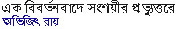
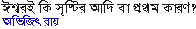
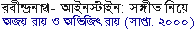
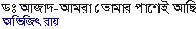

|
[A
response from a reader]



(Response:
Raihan-1
| SMI-1
|
Bonna
| SMI-2
|
Raihan-2
|
Raihan-3 |
SMI-3
Bonna |
Avijit |
Raihan-4 |
SMI-4 |
Bonna
|
Raihan-5 |
Avijit)


[Response:
Raihan
| Avijit
| Raihan
| Avijit]
[Response :
Afroza Begum |
Alamgir]
Response :
Biplab Pal
[Response :
Abul Kasem]
[Response:
Dr. Biplab Pal]
[Response:
Kalyan |
Biplab
|
Avijit |
Biplab |
Avijit |
Subimal |
Avijit]
[Related article:
Tapan Bagchi |
Nondini |
Robaet Ferdous
|
Dr. Anwar
Hossain |
HasanAl]

[Response:
Dr. Taj Hashmi]
(In weekly
Bchitra :Page:
34 |
35|
36|
37|
38)
[Debate:
Akash
|
Biplab |
Avijit ]
Also
published in
Amader Shomoy
(Part:
1 |
2 |
3 |
4 |
5 |
6 |
7)
[Reader's
comment]
(Part:
1 |
2 |
3 |
4 |
5)


(Part:
1 |
2 )
|